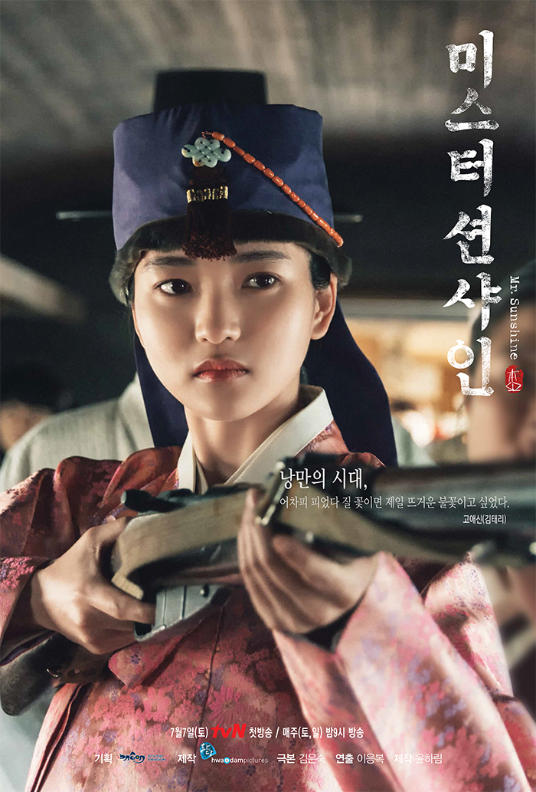
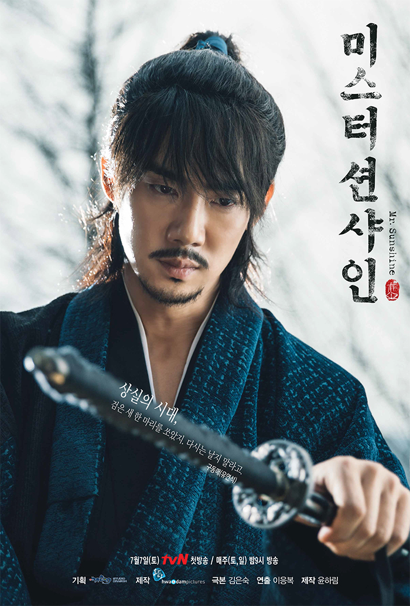
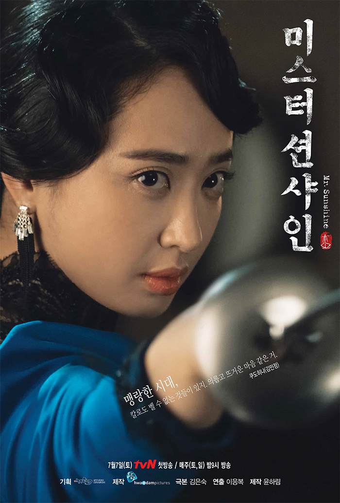
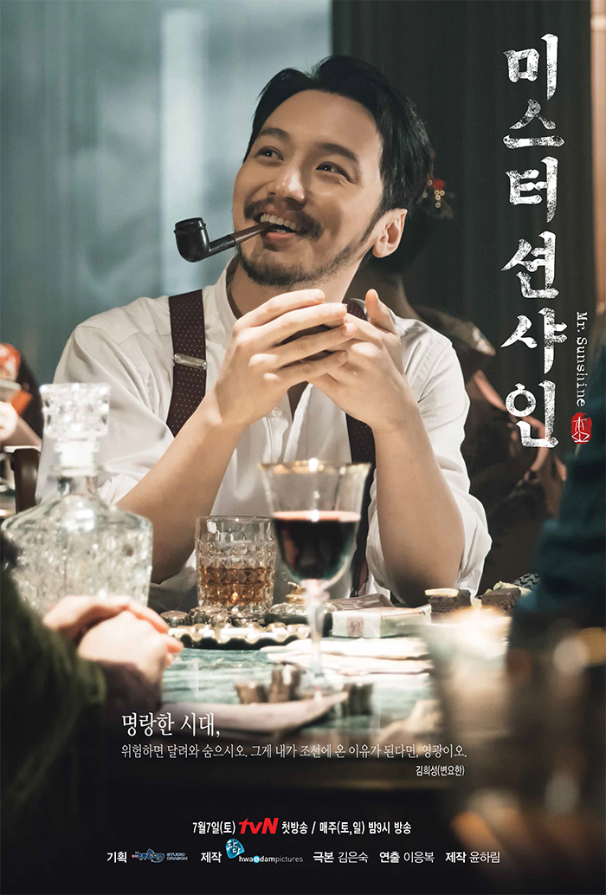

|  |  |  |  |
(미 해병대 장교) 어미도 아비도 노비여서 태어나는 순간부터 노비였으나 검은 머리를 가진 미국인인 사내. 하여, 이방인의 냉정함, 침략자의 오만함, 방관자의 섹시함을 가진 사내. |
(사대부 영애) 하루가 멀다 하고 온갖 추문이 대문을 넘어왔다. 그도 그럴 것이 열다섯만 넘어도 노처녀 소리 듣는 조선 땅에서 혼기를 놓쳐도 한참 놓친 애신의 나이 스물아홉이었다. 이게 다 희성 때문이다. |
(무신회 한성 지부장) 태어나보니 백정의 아들이었다. 백정은 사람이 아니었다. 마주치면 기겁했고 비껴가면 침을 뱉었다. 막무가내의 매질이 외려 덜 아팠다. 소나 돼지만도 못한 존재, 그게 동매였다. |
(호텔 '글로리'사장) 조선 이름 ‘이양화’에 먹물이 마르기도 전에 일찍이 결혼해 ‘쿠도 히나(工藤 陽花)’가 되었다. 그녀의 어머니는 조강지처였으나 조선인이란 이유로 아버지에게 내쳐졌기 때문이었다. |
(애신의 정혼자) 빛날 희, 별 성. 사람은 이름 따라간다고 희성은 어디서나 눈에 띄었다. 다정하고 재밌고 돈 많고 잘생기기까지 했으니 늘 목하 열애중이다. 자칭 박애주의자 타칭 바람둥이다. |